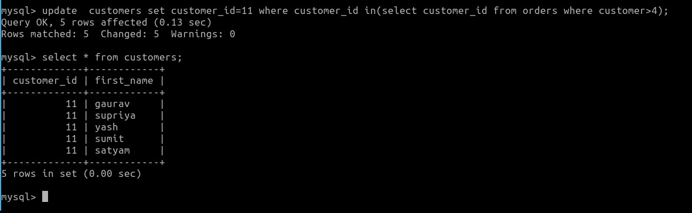

A JOIN clause is used to combine rows from two or more tables, based on a related column between them.
INNER JOIN
The INNER JOIN keyword selects records that have matching values in both tables.
syntax:
SELECT column_name(s) FROM table1 INNER JOIN table2 ON table1.column_name = table2.column_name;
Example:
LEFT JOIN
The LEFT JOIN keyword returns all records from the left table (table1), and the matching records from the right table (table2).
The result is 0 records from the right side, if there is no match.
syntax:
SELECT column_name(s) FROM table1 LEFT JOIN table2 ON table1.column_name = table2.column_name;
Example:
RIGHT JOIN
The RIGHT JOIN keyword returns all records from the right table (table2), and the matching records from the left table (table1).
The result is 0 records from the left side, if there is no match.
syntax:
SELECT column_name(s) FROM table1 RIGHT JOIN table2 ON table1.column_name = table2.column_name;
Example:
SET OPERATORS
SET operators are special type of operators which are used to combine the result of two queries.
1.UNION
UNION will be used to combine the result of two select statements.
Duplicate rows will be eliminated from the results obtained after performing the UNION operation.
syntax:
SELECT *FROM table1 UNION SELECT *FROM t2;
Example:
SELECT *FROM customers UNION SELECT *FROM orders;
2.INTERSECT:
It is used to combine two SELECT statements, but it only returns the records which are common from both SELECT statements.
syntax:
SELECT *FROM table1 INTERSECT SELECT *FROM t2;
Example:
SELECT *FROM customers INTERSECT SELECT *FROM orders;
3.MINUS:
It displays the rows which are present in the first query but absent in the second query with no duplicates.
syntax:
SELECT *FROM table1 MINUS *FROM t2;
Example:
SELECT *FROM customers MINUS SELECT *FROM orders;
SUBQUERIES
A subquery is a SQL query nested inside a larger query.
The subquery can be nested inside a SELECT, INSERT, UPDATE, or DELETE statement or inside another subquery.
A subquery is usually added within the WHERE Clause of another SQL SELECT statement.You can use the comparison operators, such as >, <, or =.
The comparison operator can also be a multiple-row operator, such as IN, ANY, or ALL.
A subquery is also called an inner query or inner select, while the statement containing a subquery is also called an outer query or outer select.
Subqueries with the SELECT Statement:
syntax:
SELECT column_name [, column_name ] FROM table1 [, table2 ] WHERE column_name OPERATOR
(SELECT column_name [, column_name ] FROM table1 [, table2 ] [WHERE])
Example:
syntax:
UPDATE table SET column_name = new_value [ WHERE OPERATOR [ VALUE ]
(SELECT COLUMN_NAMEFROM TABLE_NAME) [ WHERE) ]
Example:
